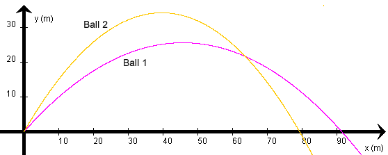

The diagram shows the trajectories of two balls traveling without air resistance after being launched simultaneously at the origin. Both balls are launched with the same speed, but with different launch angles. Ball 1 (red trajectory) is launched at a smaller angle and Ball 2 (yellow trajectory) at a larger angle.
The balls' trajectories intersect at some point.
Question. Which of the following statements is true?
 (a)
(a)  Ball 1 reaches the intersection point first.
Ball 1 reaches the intersection point first.
 (b)
(b)  Ball 2 reaches the
intersection point first.
Ball 2 reaches the
intersection point first.
 (c)
(c)  Both balls reach the
intersection point at the same time.
Both balls reach the
intersection point at the same time.